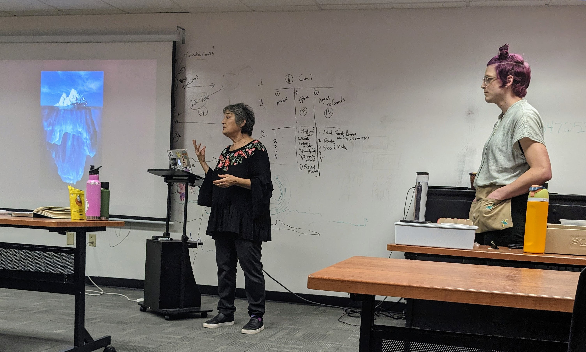
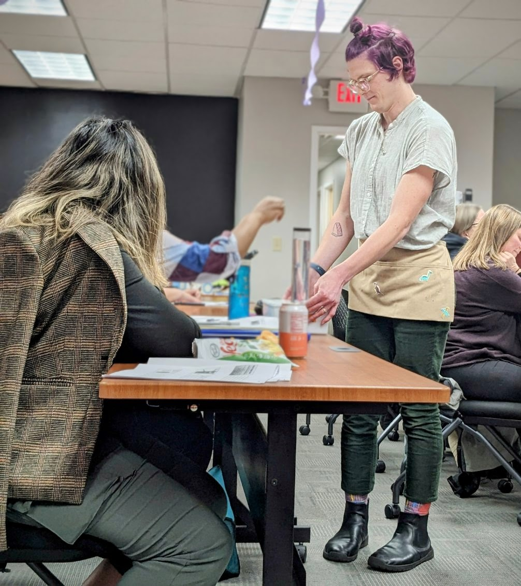
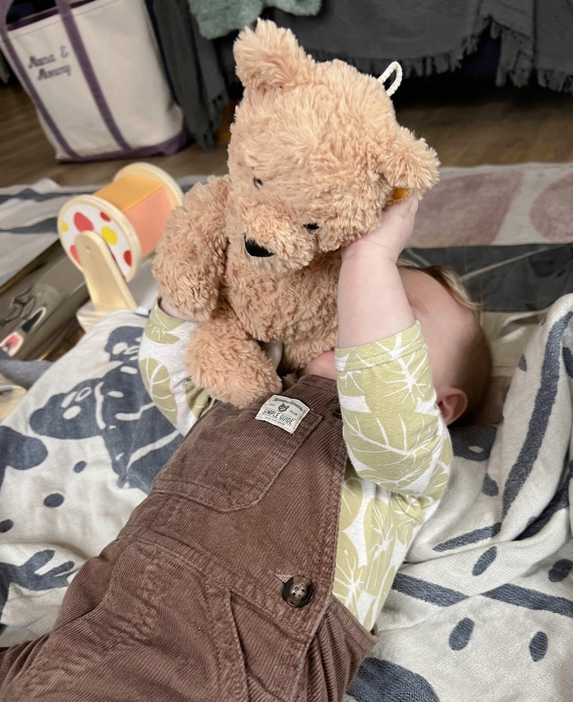
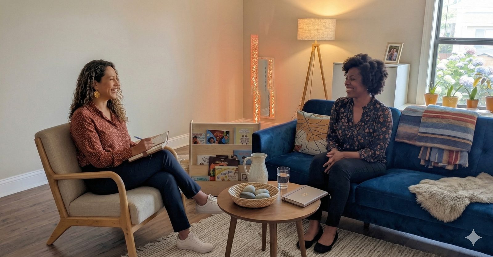
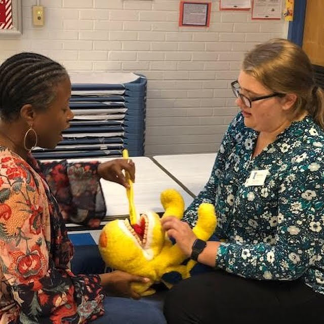

Services
How We Work Together
Every engagement is tailored to your program, your families, and your goals. Here’s what we offer.
Every engagement is tailored to your program, your families, and your goals. Here’s what we offer.

One-on-one or group coaching and reflective supervision sessions for educators, directors, caregivers, and families. Our sessions focus on birth-to-three development, early care and education practice, and infant mental health.
Reflective supervision isn’t about telling people what to do - it’s about creating a space where professionals can slow down, notice patterns in their practice, and grow. Our team is endorsed in reflective supervision and grounded in the belief that the parallel process matters: how we support adults mirrors how adults support children.

Interactive workshops, seminars, and training sessions designed to foster reflective practice and professional growth. Our workshops are participatory, grounded in real classroom and home visit experiences, and designed to honor what educators already know.

Developed at Bank Street College’s Center for Emotionally Responsive Practice by Lesley Koplow, LCSW, the BEAR Program places a personal teddy bear in every child’s hands - creating a portable emotional anchor for expressing feelings, navigating transitions, and building relationships.
ConnectEd Circles delivers BEAR workshops and follow-up coaching in partnership with Buncombe Partnership for Children and Raising Resilience WNC. Teachers don’t need to overhaul their routines - they welcome the bears into the classroom and follow the children’s lead.
A comprehensive, hands-on training synthesizing Emotionally Responsive Practices, TEACCH, and DIR/Floortime - developed in collaboration with autism specialist Catherine Faherty. Three integrated modules, capped at 25 participants, available in English and Spanish.
Full Training Details →
Comprehensive support for families, including care coordination, referrals to community resources, and guidance navigating systems of care. We know that supporting children means supporting the whole family - and sometimes that means helping a parent find stable housing, access mental health services, or simply feel less alone.

Tailored curriculum design and implementation support based on best practices in early childhood education. We help programs create learning environments - in classrooms and homes - that promote exploration, creativity, social-emotional development, and belonging for every child.
Our data and science communication specialists help programs understand their impact and tell their stories in ways that matter - to funders, to families, and to the broader community.
Every engagement starts with a conversation.
Tell us about your program or family and what kind of support you’re looking for.
We’ll schedule a free introductory call to understand your needs and goals.
We co-create a plan that honors your strengths and meets you where you are.
That’s okay - most of our best work starts with “I’m not sure what I need, but something isn’t working.” Let’s figure it out together.
Let’s Talk →